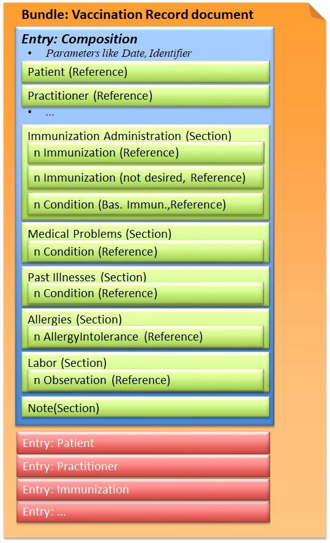

Implementation Guide CH VACD
6.0.0-ballot-ci-build - ci-build

Implementation Guide CH VACD
6.0.0-ballot-ci-build - ci-build

Implementation Guide CH VACD - Local Development build (v6.0.0-ballot-ci-build) built by the FHIR (HL7® FHIR® Standard) Build Tools. See the Directory of published versions
The Vaccination Record document describes the content and format of a vaccination record document. It is a compilation of all available immunization-related content and thus shows the patient’s immunization status at a specific point in time. The vaccination dossier contains the entries from the vaccination documentation, i.e. information on applied immunizations and further relevant chapters as medical and exposition risks or serology results.
This document is allowed to be used in context of the Swiss EPR but can also be used in context of data exchange next to the Swiss EPR.
A vaccination record document can be an aggregation of multiple immunization administration documents. The process of the aggregation and its criterias and problems is described here
This exchange format is defined as a document type that corresponds to a Bundle as a FHIR resource. A Bundle has a list of entries. The first entry is the Composition, in which all contained entries are then referenced.
Fig.: Vaccination Record document

In CH VACD it is specified to use an UUID as identifier, for both the document and resource identifiers. For representing UUIDs the system needs to be urn:ietf:rfc:3986 as described here. The value has to start with urn:uuid:.
Document identifier in 1.3 Vaccination Record:
Bundle.identifier/Composition.identifier. In first version of the document the both are equal. On updates of the document they differ.
"identifier" : {
"system" : "urn:ietf:rfc:3986",
"value" : "urn:uuid:5bca53b2-0973-4b91-961e-b1e93474c9c2"
}
The narrative text in the composition of the bundle of type document can be generated using the FHIR XML representation and the defined xslt transformer defined in this implementation guide. for further details see Narrative Text Generation